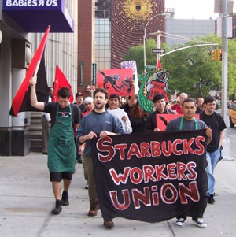
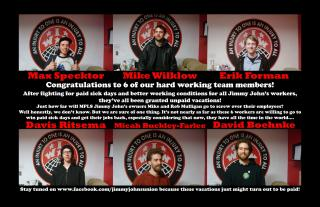

This page displays *all* news items from Restaurant, Hotel, and Building Service Workers Industrial Union 640.
For an overview of the IU 640's history and contact information, please visit our homepage.
Submitted on Sat, 07/02/2011 - 3:19am
The Silent Room: A Worker's Musical
Contacts: Ted Dewberry, 763-607-4492; Erik Forman, 612-598-6205
The Silent Room Takes Audiences Inside Labor Insurgency in America's Corporate Chains
Sneak Preview: 7:30pm July 7th, Zorongo Dance Theater Performance Dates: August 5th-11th in the Minnesota Fringe Fest at the Gremlin Theater.
MINNEAPOLIS-- When a coworker at Starbucks approached barista Ted Dewberry about forming a union at their workplace, his initial reaction was fear. Working 17 hour days at Starbucks and IKEA to pay off decades-old film school student loans, Ted was in no position to risk his job. He reluctantly agreed to come to a meeting, but only to listen. Little did he know the decision would change his life. In the months that followed, Ted and his coworkers faced down a campaign of intimidation coordinated by Starbucks' anti-union consultants at the Akin Gump law firm, won improved working conditions at their store, and helped spark a retail workers movement that continues to grow with unionization campaigns at Jimmy John's, Target, Walmart, the Apple Store, and other corporate juggernauts.
An independent filmmaker in his limited free time, Dewberry decided to tell the story of what happens when you say "union yes." The result is "The Silent Room," a new music-laced exposé of the misery of the corporate retail workplace. The name of the show is inspired by a special room in the Twin Cities IKEA for workers to go to when they have a nervous breakdown on the job.
Submitted on Sun, 06/19/2011 - 1:02pm
By Adam Kader, In These Times, June 16, 2011.
This article is reposted in accordance with Fair Use Guidelines. The opinions of the author do not necessarily reflect those of the IWW and vice versa. The image included here was not included with the original article.
The decline of unions does not mean the end of the labor movement. Indeed, the last few years have seen a proliferation of new kinds of worker organizations and workers' rights campaigns. Some of the most exciting of late have been conducted by community-based groups (rather than workplace-based unions), such as the Coalition of Immokalee Workers and those part of the National Domestic Workers Alliance.
In Solidarity Unionism at Starbucks, a recent pamphlet published by PM Press, Daniel Gross and Staughton Lynd highlight an increasingly important feature of today’s labor movement—nonunion workers using direct action strategies protected by the National Labor Relations Act (NLRA)—while examining the Industrial Workers of the World’s (IWW)'s ongoing efforts to organize Starbucks.
Submitted on Sat, 06/04/2011 - 1:48pm
Company Credibility Erodes as NLRB Investigation over Firing of Six Whistleblowers Continues:
June 3, 2011 - Jimmy John's Workers Union & Industrial Workers of the World
Contacts: Max Specktor, 612-250-7309, Erik Forman 612-598-6205
MINNEAPOLIS- Two months after Jimmy John's fired six workers for blowing the whistle on a company practice of forcing sandwich-makers to work while sick, the IWW Jimmy John's Workers Union has released Minnesota Department of Health documents today revealing eight outbreaks of foodborne illness at franchises across the Twin Cities area in the past five years, seven of which were due to employees working while sick at the chain. The release of the documents seriously erodes the credibility of Minneapolis franchise owner Mike Mulligan who had previously claimed to reporters and employees that, "the company has made more than 6 million sandwiches during its nearly 10 years in business—and no one’s ever gotten sick from eating one." Two of the outbreaks, both caused by sick employees, were at the Mulligans' stores.
"This is smoking gun evidence not only of the seriousness of the public health risk caused by workers being forced to work while sick at Jimmy John's, it also proves that Jimmy John's franchise owner Mike Mulligan willfully lied to the media, the public, and his employees about his food safety track record. We will continue our fight for paid sick days for restaurant workers until Jimmy John's changes their policy to protect workers and the public," said Max Specktor, one of the fired whistleblowers.
Submitted on Sat, 05/14/2011 - 1:52pm
May 9, 2010: Grand Rapids, MI - Bartertown Diner and Roc's Cakes--a raw, vegan/vegetarian restaurant opening in a couple weeks in downtown Grand Rapids has decided to go "wobbly." The seven member team which constitutes the worker-run establishment have all decided to join the old and storied Industrial Workers of the World labor union.
"It just seemed like the perfect fit for us. After meeting with members of the IWW it was clear that we all want the same things and being that we really don't want to be just another restaurant it seemed logical," said Ryan Cappelletti cook at the new Diner.
Bartertown Diner and Roc's Cakes, which will be located at 6 Jefferson St., joins a growing list of worker-owned IWW shops. The Red and Black Cafe in Portland, Oregon and Just Coffee in Madison, Wisconsin being two others.
"We are very happy that Bartertown and Roc's Cakes has decided to go IWW and believe it can only help in our larger campaign to raise the standard of living and benefits for all food and beverage workers in Grand Rapids, said Shannon Williams, Treasurer of the local IWW branch.
Submitted on Thu, 05/05/2011 - 5:52pm
By Marc Norton - May 5, 2011
First published inBeyond Chron - http://www.beyondchron.org/news.php?itemid=9153
For photos, see Indybay - http://www.indybay.org/newsitems/2011/05/05/18678943.php
A non-traditional alliance of workers in Portland and Seattle organized a Day of Solidarity with Hotel Frank Workers last Friday, April 29. The Portland Industrial Workers of the World (IWW), the Seattle Solidarity Network, and Hotel Frank workers were all on the streets picketing Provenance hotels. Provenance is the hotel management company that threw the UNITE HERE Local 2 contract at Hotel Frank in the trash almost a year ago.
In Portland, the IWW picketed Hotel Lucia. Provenance has its headquarters in Portland, as well as two upper-crust boutique hotels, Hotel Lucia and Hotel deLuxe. The IWW has a long history as a militant and radical labor union, often credited with popularizing the slogan and philosophy that “An Injury to One is An Injury to All.” That was certainly the spirit in evidence when they set up their picket line last Friday. You can see a short video of the action here.
In Seattle, the Seattle Solidarity Network picketed Hotel Max, another high-end Provenance boutique hotel. SeaSol, founded in 2008, is a much younger organization than the IWW, but has already established a reputation for organizing successful campaigns for workers and tenants’ rights. They can mobilize an impressive number of people, and did just that on Friday.
And in San Francisco, Hotel Frank workers held our regular Friday afternoon picket. Hotel Frank workers declared a boycott of the hotel last September. Since then we have staged an escalating series of actions aimed at restoring our Union contract, including active picket lines and unannounced delegations to management.